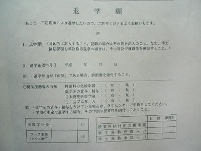
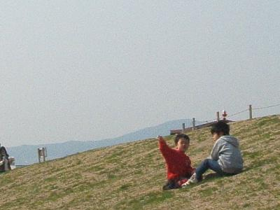
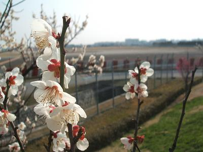

日々、想ふ
〜過去感じたことがつれづれと〜
（できるだけ最大化してお読みください）
日々、想ふ
やりすぎ感。３/１５
チャリこいで
チャリをこいで
チャリこぐ
タケユキです。
とりあえず今日やったことの１つに焦点をあてて
詩をつくってそれでどうにか日記作れないかなぁと
試してはみたんですが。
これだとチャリに乗ってた時間が果てしなく長そうな感じですね。
実際は１０分程度しか乗ってないんですが。
これはこれで虚偽記載ですかね。粉飾決算ですかね。
流行りの言葉でごまかそうとしてもきれいに失敗してるので今日はここまで。
今日の晩御飯：肉肉。
まだ冬でした。３/１４
雪の中
バイクで走り
買出しへ
タケユキです。
なんで３月も半ばになって雪ですか。
今日いろいろと食い物買い込んだんで
余裕で引きこもってやりますよ、ええ。
さっさと恋よ、春。
今日の日記：ちょっと前の日記で春はもうすぐそこって書いたのに。
ドロップアウト？３/１３

初体験
退学願い
提出す
タケユキです。
今日が手続き日だったんで午前のうちに行って提出してきました。
今日でこれからニート？いやバイトしてるからフリーターか。
なんてアホなことを一瞬考えたけどももちろん今月いっぱいは
大学生の扱いなんだろう。
今日の気温：さむすぎ。
サイレントゲタウェイ。３/１２
バイト中
大失敗
超凹み
タケユキです。
こんな日は寝るに限る。
今日の大パニック：・・。
小春。３/１１
バイト前
ひなたぼっこを
楽しんで
タケユキです。
今日はあったかいらしいと天気予報のお姉さんが言ってたので
バイト前に空港横の公園に行ってきました。
休みの午後っていう時間帯も重なってか
公園には子ども連れの親子が目立つ。

その中でひとりベンチに座ってうっつらうっつらしました。
おかげでちょっとバイトに遅刻するかもと焦ったり。
まぁバイトには遅刻せんかったけども。

花も満開とまではいかないけど７割くらいは咲きそろってた。
三月ももうすぐ中旬。
春はもうすぐそこ。
今日の天気：曇り気味なのがちょっと残念。
明日は。３/１０
今日は雨
明日はもっと
あったかい
タケユキです。
今現在の予報で明日の最高気温は１８℃。
今日の最高気温より＋５度だとか違うトカ。
明日バイト前に軽くどこか走ってこようか。
今日の日記：トカに反応したあなたは「ワイルドアームズ２」好きでしたね？
迷いどころ。３/９
５年ぶり
量的緩和
解除です
タケユキです。
景気が回復基調にあることから
日銀の量的緩和政策の解除が決定。
量的緩和：日銀の金融政策のひとつ。
金利の上げ下げで景気をコントロールするのでなく
国全体のお金の流通量を増やすために
各銀行の持っている国債や手形を日銀が買い取り
各銀行が日銀に持っている当座預金にその代金を置くことで
預金残高を増やします。
各銀行は日銀の預金残高の額に比例して融資ができる金額が決まるそうで
お金をたくさん預けておけばその分融資ができて資金が流通し、
景気を上向きにしようという作戦だったみたいですね。
後々金利が上昇し、それが市場にも影響して
大局的には株価が下落していくという見方もあるようで。
さぁ、どうしたもんか。
今日の昼：梅田行きました。
振り込んだけども。３/７・８
大学院
入るだけで
３０万
タケユキです。
大学・大学院はどこでも入学するのだけでも
３０万近いお金がかかるんですよね。
これっていったい何に使う？
授業料は別に納めるし
学生データの作成・学生証の発行、
入学に関するものってそんなにお金かからんような。
どないなんだろ。
今日の１日：結局昼起き。
やさぐれデイ。３/５・６
なんていうか
なんていうかズーン
ですよね
タケユキです。
もうね、なんかやっとれないですよ。
すっきりしないんですゆ？
人間関係？
進路の話？
まぁいろいろですよね。
今日の日記：すっきりしないですよね。
母さんの味。３/４
かあさ〜ん
忘れんさんな
ますや味噌よ
タケユキです。
懐かしいよね、これ。
今日の日記：参考までに
ますや味噌。
SUN SUN SUN'95。３/３
ちょっと待ち
その行さっき
読んだやろ
タケユキです。
金曜は塾で中学生に理科・国語を教えているんだけど
国語の授業中に問題文を読んでもらってた時のこと。
ひとつの行を読み終わり、次の行を読もうって時に
ちゃんと次の行に行かないで今読んだ行をもう一度読み始めた男の子。
しかもその文が行の終わりと頭でうまくつながったもんだから
男の子はそのことになかなか気付かない。
まぁ途中で俺から声かけたんだけど
こんなところに無限ループの罠が。
たまに小説とか読んでて間違えそうになるけど
他の人が間違えてる現場を初めて見た。
妙に親近感あるのな。
今日のバイト：いやぁ気楽なもんで。
今日のわんこ風に。３/２
ボールペン
探しに梅田
徘徊す
タケユキです。
俺は昔の無印のボールペン・シャーペン(ねずみ色の細いタイプ)が
好きだったんだけど
ここ最近は無印に置いてなくて昔に買ったボールペン・シャーペンを
大切に使っています。
それが昨日からボールペンが見当たらなくなったんで
ダメもとで梅田の無印に行ってみるも
やっぱり見つからず、気にいるボールペンがないか
探しまわっていました。
最近の無印のボールペン・シャーペンシリーズには
どうも納得がいかない、タケユキなのでした〜。
今日の梅田：天気が微妙でしたね。
ワークショップ。２/２７〜３/１
勢いで
ビンゴにリンゴ
持って行く
タケユキです。
一泊二日で研究室のワークショップに行ってきました。
夜にビンゴ大会をやるって聞いてたので
ビンゴになった時に
「リンゴーー！！あっ間違えた、"ビンゴ"やーーっ！！」と
言いたかったのでリンゴを買ってカバンに入れていきました。
結果、見事 一 等 賞 。
俺は↑のセリフを言いたいがためにビンゴやってて
賞品に全然興味がなかったんだけど
いざ前に出て行ってみるとなんと折りたたみ式自転車もらいました。
まぁ結局は友達にあげることになったんですが
いやー、あれはおいしかった、久しぶりに爆笑とったと一人自負。
ここだけ書くと遊びに行ってたんかいって思われそうだけど
一応話をちゃんと聞いてきましたよ。
企業の方の招待講演もあったし。
卒論・修論で発表されてた研究内容などの
発表会みたいなものだったので
理解できてたかと問われると答えは限りなくNoに近いですが
得るものはあったと思います。
最後に先生の言っていた「常に頭では"So what?"を考えろ」
には少し感銘を受けました。
研究をする上で「〜を比較・検証した」「〜を考案した」だけで
研究を終了させてはだめ。
〜を比較・検証した、〜を考案した、
"So what?" -- "だ か ら な に ？"
その研究をする上でその先に何を見据えているのか、
比較・検証をした結果どんな効果があるのか、
それを明確にして研究を行い、それを主張すべき。
今、４月から行う研究の引継ぎを行っています。
その言葉を常に念頭において物事を考えていこう。
ちょっと決意を新たにした日でした。
興味のない(難しい)研究発表の時に少し
うっつらうっつらしてたのは気のせいですよ。
今日の日記：コピペ。